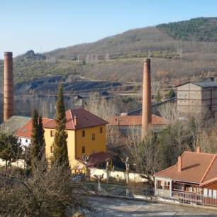
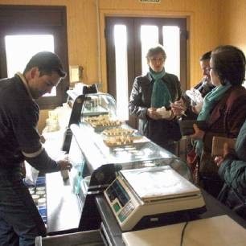
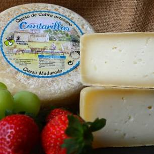

Paquetes familiares fin de semana estandarizados.
Barruelo de Santullán

Ruta Interpretada por la vía Antoniana. Recorrido por el cerco industrial de Barruelo de Santullán.
Visita interpretada por el núcleo central para conocer las principales edificaciones vinculadas a la extracción y tratamiento del carbón, el recorrido que hacían las vías hasta llegar a la estación.

Visita a la quesería Cantarillos (Salinas de Pisuerga)
Visita a la quesería Cantarillos (Salinas de Pisuerga) por lo que nos desplazaremos (vehículos propios) por el valle de Santullán pasando por diferentes pedanías. Un recorrido en el que se podrá observar el patrimonio histórico-artístico y natural del Valle.

Degustación de productos locales
Degustación de productos locales en los diferentes locales de la Montaña Palentna